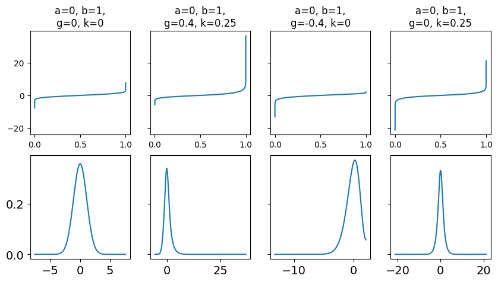

import pymc as pm
import numpy as np
from scipy import stats
import arviz as az
import matplotlib.pyplot as plt
import pandas as pd
data = pd.read_csv("/home/osvaldo/proyectos/00_BM/BMCP_org/BookCode_Edition1/data/air_pollution_bsas.csv")
bsas_co = data["co"].dropna().values
bsas_co
array([0.539 , 0.669 , 0.3225 , ..., 0.63458333, 0.7125 ,
0.4975 ])
class g_and_k_quantile:
def __init__(self):
self.quantile_normal = stats.norm(0, 1).ppf
self.pdf_normal = stats.norm(0, 1).pdf
def ppf(self, x, a, b, g, k):
z = self.quantile_normal(x)
return a + b * (1 + 0.8 * np.tanh(g*z/2)) * ((1 + z**2)**k) * z
def rvs(self, rng, a, b, g, k, size):
x = rng.uniform(0, 1, size)
return self.ppf(x, a, b, g, k)
gk = g_and_k_quantile()
u = np.linspace(1E-14, 1-1E-14, 10000)
params = ((0, 1, 0, 0),
(0, 1, .4, 0.25),
(0, 1,-.4, 0),
(0, 1, 0, 0.25))
_, ax = plt.subplots(2, 4, sharey="row", figsize=(10, 5))
for i, p in enumerate(params):
a, b, g, k = p
ppf = gk.ppf(u, a, b, g, k)
ax[0, i].plot(u, ppf)
ax[0, i].set_title(f"a={a}, b={b},\ng={g}, k={k}")
#ax[1, i].plot(x, gk.pdf(x, a, b, g, k))
az.plot_kde(ppf, ax=ax[1, i], bw=0.5)

sc = pd.read_csv("sc.csv", header=None)[0].values
sc
array([694, 664, 603, ..., 0, 0, 0])
gk = g_and_k_quantile()
def gk_simulator(rng, a, b, g, k, size=len(sc)):
return gk.rvs(rng, a, b, g, k, size)
def octo_summary(x):
e1, e2, e3, e4, e5, e6, e7 = np.quantile(
x, [.125, .25, .375, .5, .625, .75, .875])
sa = e4
sb = e6 - e2
sg = (e6 + e2 - 2*e4)/sb
sk = (e7 - e5 + e3 - e1)/sb
return np.array([sa, sb, sg, sk])
with pm.Model() as gkm:
a = pm.HalfNormal("a", sigma=5)
b = pm.HalfNormal("b", sigma=5)
g = pm.HalfNormal("g", sigma=5)
k = pm.HalfNormal("k", sigma=0.1)
s = pm.Simulator("s", gk_simulator, params=(a, b, g, k),
sum_stat=octo_summary,
epsilon=2,
observed=sc)
trace_gk = pm.sample_smc()
Initializing SMC sampler...
Sampling 4 chains in 4 jobs
100.00% [100/100 00:00<? Stage: 6 Beta: 1.000]
az.plot_trace(trace_gk, kind="rank_vlines")
array([[<AxesSubplot:title={'center':'a'}>,
<AxesSubplot:title={'center':'a'}, xlabel='Rank (all chains)'>],
[<AxesSubplot:title={'center':'b'}>,
<AxesSubplot:title={'center':'b'}, xlabel='Rank (all chains)'>],
[<AxesSubplot:title={'center':'g'}>,
<AxesSubplot:title={'center':'g'}, xlabel='Rank (all chains)'>],
[<AxesSubplot:title={'center':'k'}>,
<AxesSubplot:title={'center':'k'}, xlabel='Rank (all chains)'>]],
dtype=object)
az.summary(trace_gk)
| mean | sd | hdi_3% | hdi_97% | mcse_mean | mcse_sd | ess_bulk | ess_tail | r_hat | |
|---|---|---|---|---|---|---|---|---|---|
| a | 16.169 | 1.883 | 12.755 | 19.772 | 0.021 | 0.015 | 7736.0 | 7690.0 | 1.0 |
| b | 15.575 | 1.508 | 12.829 | 18.456 | 0.017 | 0.012 | 7674.0 | 6408.0 | 1.0 |
| g | 4.102 | 2.978 | 0.077 | 9.489 | 0.034 | 0.024 | 7407.0 | 7406.0 | 1.0 |
| k | 0.094 | 0.066 | 0.001 | 0.210 | 0.001 | 0.001 | 7071.0 | 6782.0 | 1.0 |
gk = g_and_k_quantile()
u = np.linspace(1E-14, 1-1E-14, 10000)
a, b, g, k = 16, 9, 4, 0
ppf = gk.ppf(u, a, b, g, k)
_, ax = plt.subplots(1, 1)
#ax.plot(u, ppf)
ax.set_title(f"a={a}, b={b},\ng={g}, k={k}")
az.plot_kde(ppf, ax=ax, bw=0.5)
<AxesSubplot:title={'center':'a=16, b=9,\ng=4, k=0'}>
data = np.random.normal(loc=0, scale=1, size=1000)
def normal_sim(rng, a, b, size=1000):
return rng.normal(a, b, size=size)
with pm.Model() as example:
a = pm.Normal("a", mu=0, sigma=5)
b = pm.HalfNormal("b", sigma=1)
s = pm.Simulator("s", normal_sim, params=(a, b), sum_stat="sort", epsilon=1, observed=data)
idata = pm.sample_smc()
idata.extend(pm.sample_posterior_predictive(idata))